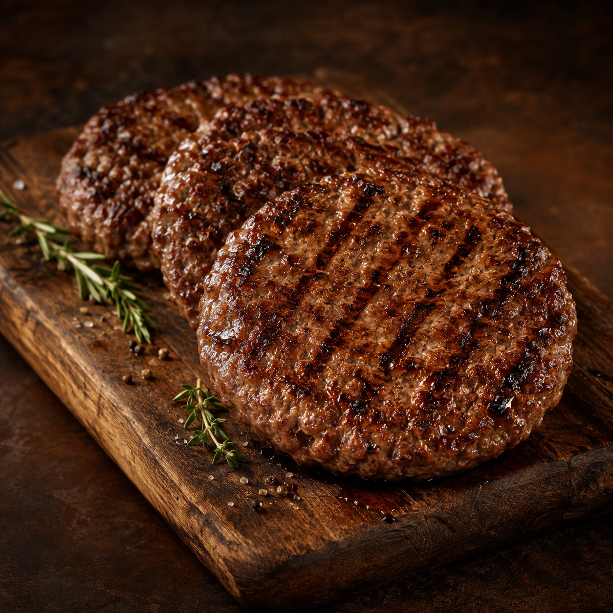
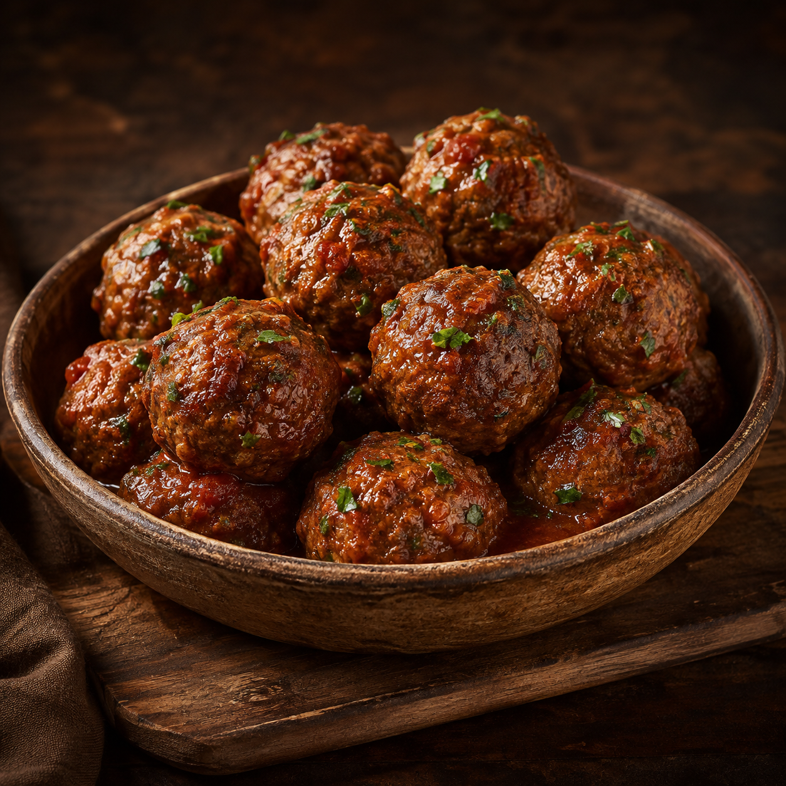
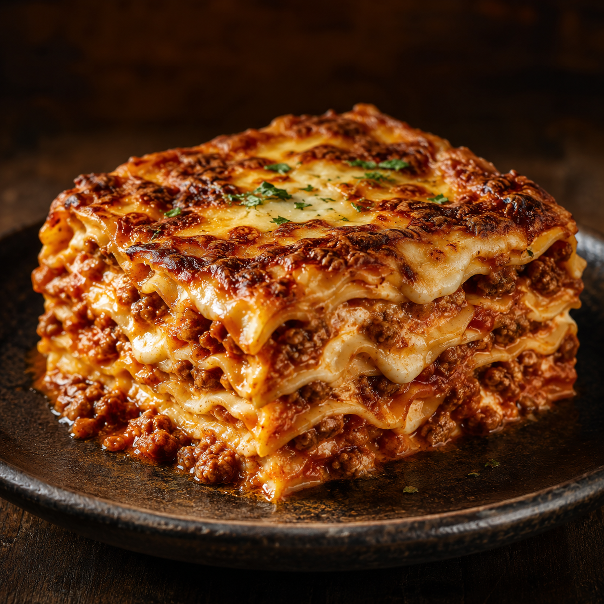
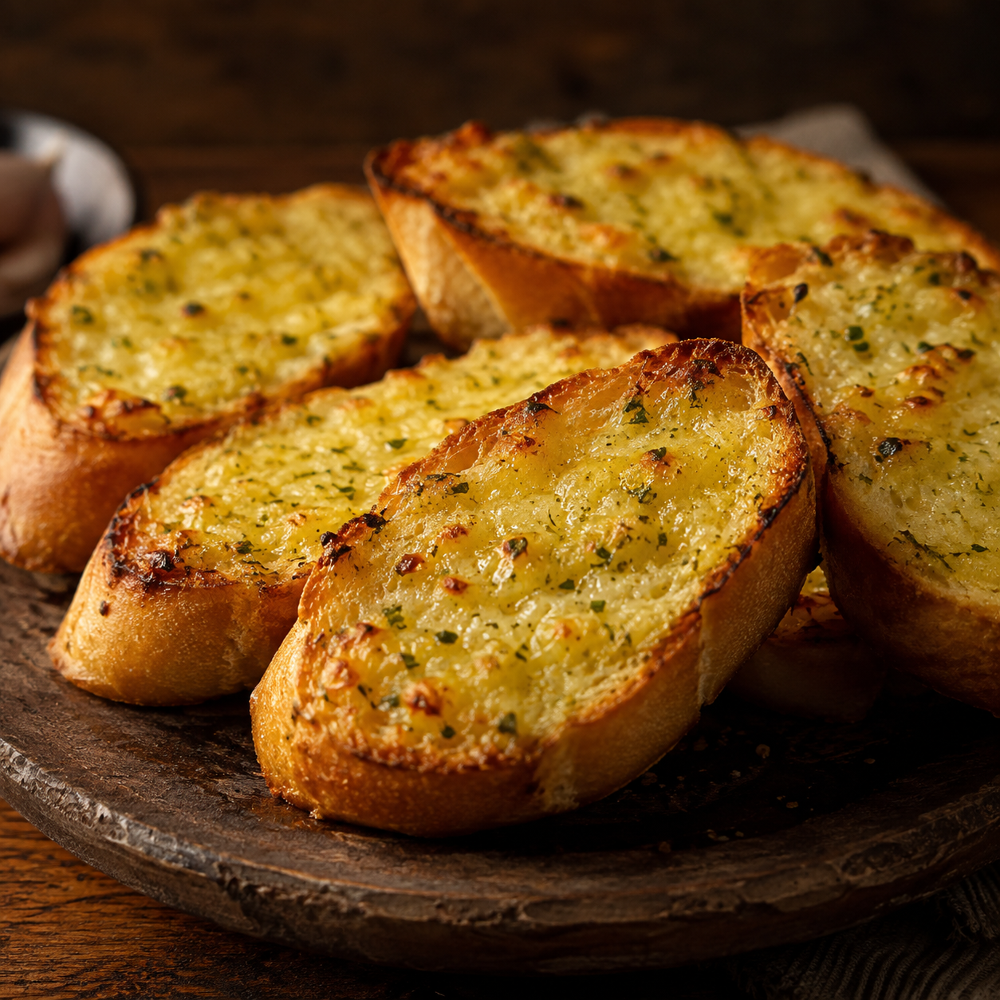
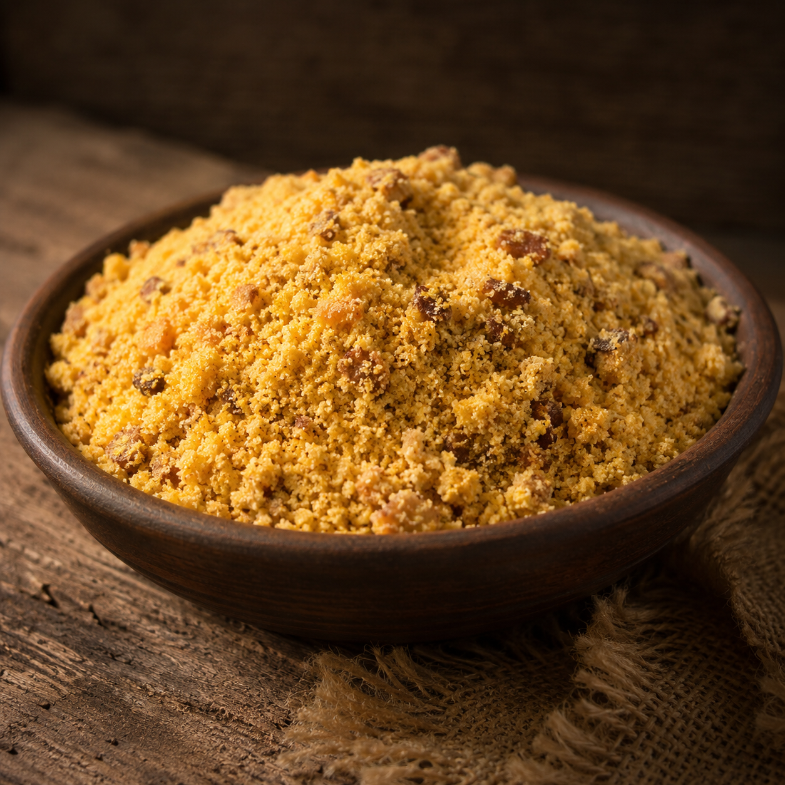
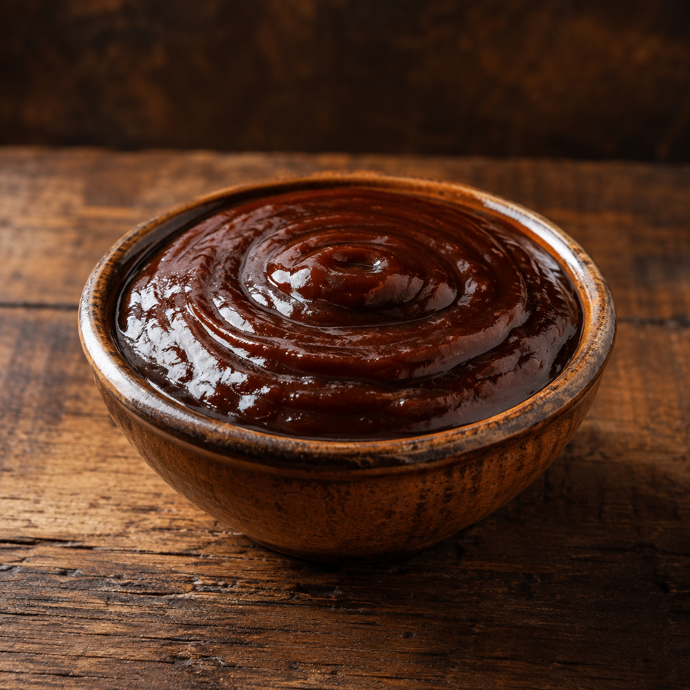
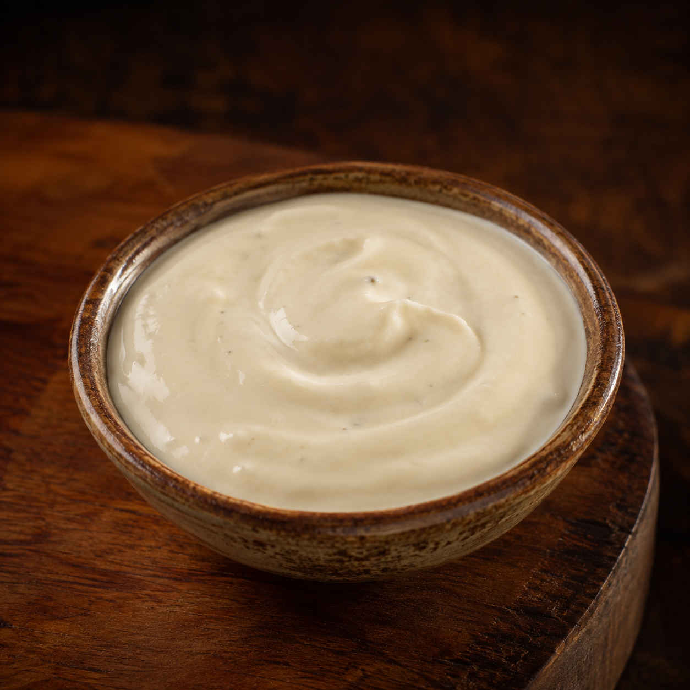
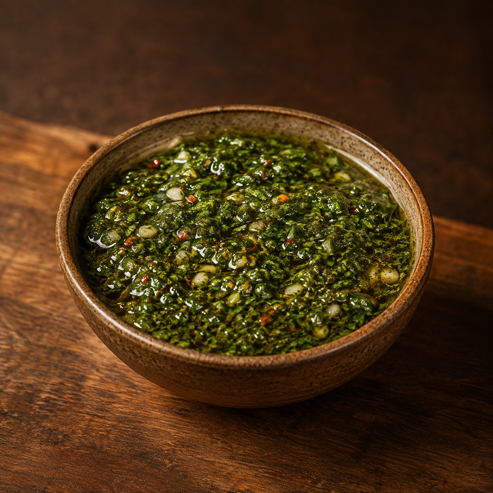
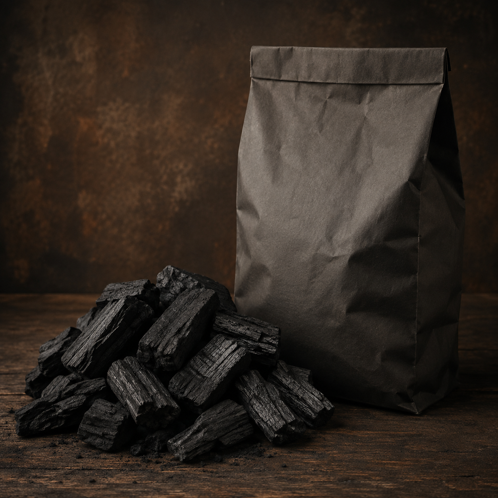
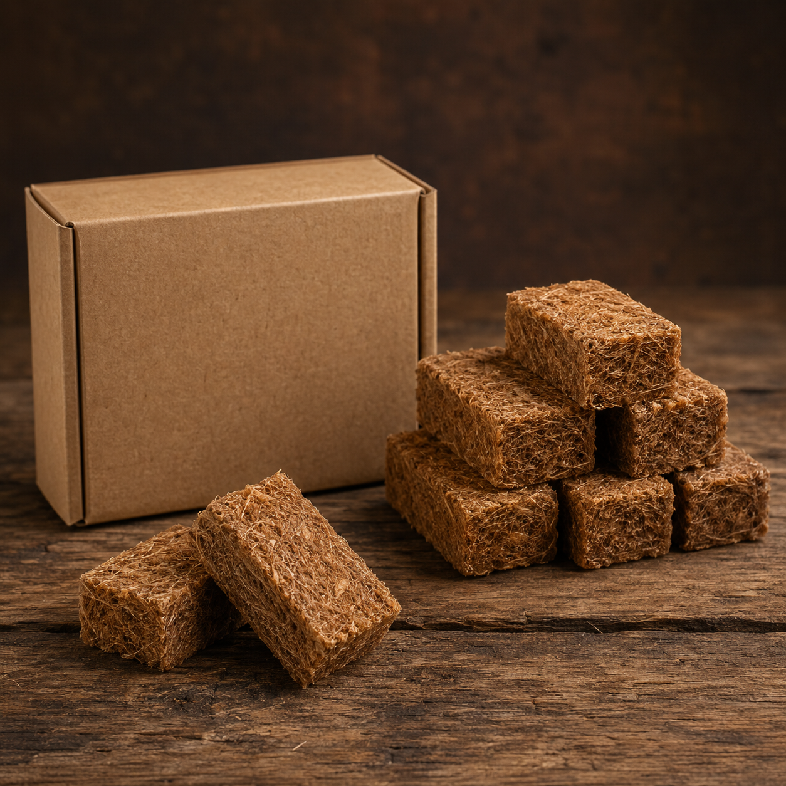

Nossos produtos
Consulte disponibilidade, marcas, pesos e condições diretamente com nossa equipe.

Hambúrguer
Prático e saboroso, ideal para lanches, sanduíches, combos e refeições rápidas.
CONSULTAR
Nuggets
Crocantes e práticos, ideais para lanches, porções, refeições infantis e acompanhamentos.
CONSULTARBatata frita congelada
Acompanhamento clássico para hambúrgueres, porções, carnes, lanches e refeições.
CONSULTAR
Lasanha congelada
Refeição prática e completa, ideal para almoço, jantar e preparo rápido.
CONSULTARPizza congelada
Prática para lanches e refeições rápidas, ideal para forno e preparo em poucos minutos.
CONSULTAR
Queijo coalho no espeto
Perfeito para churrasco, grelha e petiscos, com preparo rápido direto na brasa.
CONSULTAR
Farofa pronta
Acompanhamento tradicional para churrasco, feijoada, assados e refeições brasileiras.
CONSULTAR
Molho barbecue
Sabor marcante para costelas, hambúrgueres, carnes grelhadas, asas e petiscos.
CONSULTAR


Carvão
Indispensável para churrasqueira, garantindo calor e brasa para o preparo das carnes.
CONSULTAR
Acendedor
Facilita o início da churrasqueira, tornando o preparo da brasa mais rápido e prático.
CONSULTAR